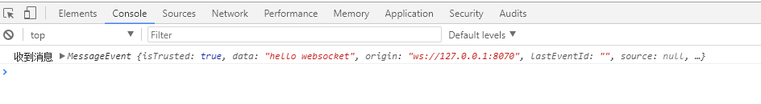
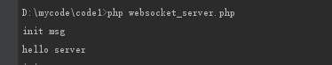

websocket的学习笔记
0 条评论什么是websocket
相对于https这种非持久化的协议来说，Websocket是一个持久化的协议。关于非持久化，我们先来回顾一下http协议的特性，在http1.0，http的生命周期通过request来界定，一个request，对应一个response,这样子，一个http周期就结束了。
虽然在http1.1版本中，有一个keep-alive首部可以让http保持长连接，也就是说一个http连接当中，可以发送多个request,接受多个response，也就是管线化，pipelining,但是
在http中，永远都是一个request对应一个response,并且http服务端是被动的，只有http客户端发起请求的时候才能响应。
就是因为http协议这样的限制，此外，http协议还是一个无状态协议，需要借助cookies才能记住访问者的信息，，所以才出现了一个很主动的协议并且有状态的websocket，websocket是基于http协议的，主要解决了http几个难题，非持久化，无状态，不能主动推送给客户端等。因此，有许多东西是跟http相通的。
握手连接
1.发送Sec-WebSocket-Key
client——————————–> server
2.加密返回Sec-WebSocket-Accept
client <——————————– server
3.本地校验
client——————————–> server
发送报文
GET /chat HTTP/1.1
Host: server.example.com
Upgrade: websocket
Connection: Upgrade
Sec-WebSocket-Key: x3JJHMbDL1EzLkh9GBhXDw==
Sec-WebSocket-Protocol: chat, superchat
Sec-WebSocket-Version: 13
Origin: http://example.com
跟我们常见的http协议请求头相比，多了几个首部字段
Upgrade: websocket
Connection: Upgrade
这两个首部的作用就是发起websocket协议。还有几个首部字段来验证区分协议以及协议的版本
Sec-WebSocket-Key: x3JJHMbDL1EzLkh9GBhXDw==
Sec-WebSocket-Protocol: chat, superchat
Sec-WebSocket-Version: 13
响应报文
表示已经转换成了webdocket协议
HTTP/1.1 101 Switching Protocols
Upgrade: websocket
Connection: Upgrade
Sec-WebSocket-Accept: HSmrc0sMlYUkAGmm5OPpG2HaGWk=
Sec-WebSocket-Protocol: chat
webdocket模拟握手并且发送数据示例
server.php
握手的方法：
客户端指定服务端发送一个握手请求，如果服务端返回合法的HTTP头，则握手成功。
1、客户端会发送一个字段：Sec-WebSocket-Key: xxxxxooooooo
2、服务端需要截取此值，把该值累加字符串258EAFA5-E914-47DA-95CA-C5AB0DC85B11，然后进行sha1，最后再base64_encode
3、拼凑对应的响应协议内容
1 | <?php |
1 | client.html |
首次运行客户端之后，握手成功之后，会输出

点击发送消息之后，我们的控制台会输出

Websocket的作用
websokcet主要是解决了减少服务器资源的损耗，比如在我们平常开发中经常接触到的轮询
ajax轮询
ajax的原理就是让浏览器隔个几秒就发送一次请求，询问服务端是否有新信息
简单点转换成常见如下:
客户端：啦啦啦，有没有新信息(Request)
服务端：没有（Response）
客户端：啦啦啦，有没有新信息(Request)
服务端：没有。。（Response）
客户端：啦啦啦，有没有新信息(Request)
服务端：你好烦啊，没有啊。。（Response）
客户端：啦啦啦，有没有新消息（Request）
服务端：好啦好啦，有啦给你。（Response）
客户端：啦啦啦，有没有新消息（Request）
服务端：。。。。。没。。。。没。。。没有（Response） —- loop
long poll
其实原理跟 ajax轮询 差不多，都是采用轮询的方式，不过采取的是阻塞模型（一直打电话，没收到就不挂电话），也就是说，客户端发起连接后，如果没消息，就一直不返回Response给客户端。直到有消息才返回，返回完之后，客户端再次建立连接，周而复始。
场景再现：
客户端：啦啦啦，有没有新信息，没有的话就等有了才返回给我吧（Request）
服务端：额。。 等待到有消息的时候。。来 给你（Response）
客户端：啦啦啦，有没有新信息，没有的话就等有了才返回给我吧（Request） -loop
从上面可以看出其实这两种方式，都是在不断地建立HTTP连接，然后等待服务端处理，可以体现HTTP协议的另外一个特点，被动性。
何为被动性呢，其实就是，服务端不能主动联系客户端，只能有客户端发起。=
简单地说就是，服务器是一个很懒的冰箱（这是个梗）（不会、不能主动发起连接），但是上司有命令，如果有客户来，不管多么累都要好好接待。
说完这个，我们再来说一说上面的缺陷（原谅我废话这么多吧OAQ）
从上面很容易看出来，不管怎么样，上面这两种都是非常消耗资源的。
ajax轮询 需要服务器有很快的处理速度和资源。（速度）long poll 需要有很高的并发，也就是说同时接待客户的能力。（场地大小）
所以 ajax轮询 和 long poll 都有可能发生这种情况。
客户端：啦啦啦啦，有新信息么？
服务端：月线正忙，请稍后再试（503 Server Unavailable）
客户端：。。。。好吧，啦啦啦，有新信息么？
服务端：月线正忙，请稍后再试（503 Server Unavailable）
如果使用websoket的呢？
websocket
客户端：啦啦啦，我要建立Websocket协议，需要的服务：chat，Websocket协议版本：17（HTTP Request）
服务端：ok，确认，已升级为Websocket协议（HTTP Protocols Switched）
客户端：麻烦你有信息的时候推送给我噢。。
服务端：ok，有的时候会告诉你的。
服务端：balabalabalabala
服务端：balabalabalabala
服务端：哈哈哈哈哈啊哈哈哈哈
服务端：笑死我了哈哈哈哈哈哈哈
只需要经过一次HTTP请求，就可以做到源源不断的信息传送了。（在程序设计中，这种设计叫做回调，即：你有信息了再来通知我，而不是我傻乎乎的每次跑来问你 ）
这样的协议解决了上面同步有延迟，而且还非常消耗资源的这种情况。那么为什么他会解决服务器上消耗资源的问题呢？
原理
其实我们所用的程序是要经过两层代理的，即HTTP协议在Nginx等服务器的解析下，然后再传送给相应的Handler（PHP等）来处理。简单地说，我们有一个非常快速的 接线员（Nginx） ，他负责把问题转交给相应的 客服（Handler） 。
本身接线员基本上速度是足够的，但是每次都卡在客服（Handler）了，老有客服处理速度太慢。，导致客服不够。Websocket就解决了这样一个难题，建立后，可以直接跟接线员建立持久连接，有信息的时候客服想办法通知接线员，然后接线员在统一转交给客户。
这样就可以解决客服处理速度过慢的问题了。